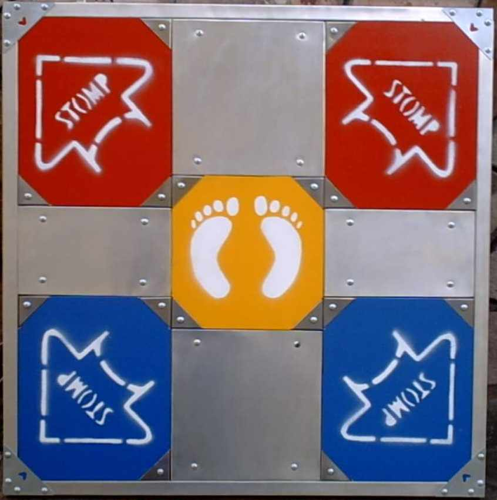

Cómo jugarHistoriaCancionesTrucosLinks
Cómo jugarHistoriaCancionesTrucosLinks
Qué esCómo jugarHistoriaCancionesTrucosLinks
Pump It Up es un videojuego de simulación de baile que consta de una máquina con una pantalla, bocinas y luces conectada a un tablero en el suelo. Este tablero tiene dos tubos en la parte trasera donde los jugadores pueden sujetarse y diez sensores con dibujos de flechas donde los jugadores ponen los pies al ritmo de lá música siguiendo los pasos que se muestran en la pantalla.
Actualmente se puede encontrar la máquina en la mayoría de los shoppings y loacles de videojuegos de Capital Federal, además de la versión para pc.
